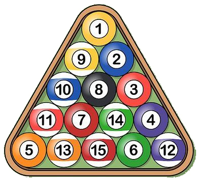
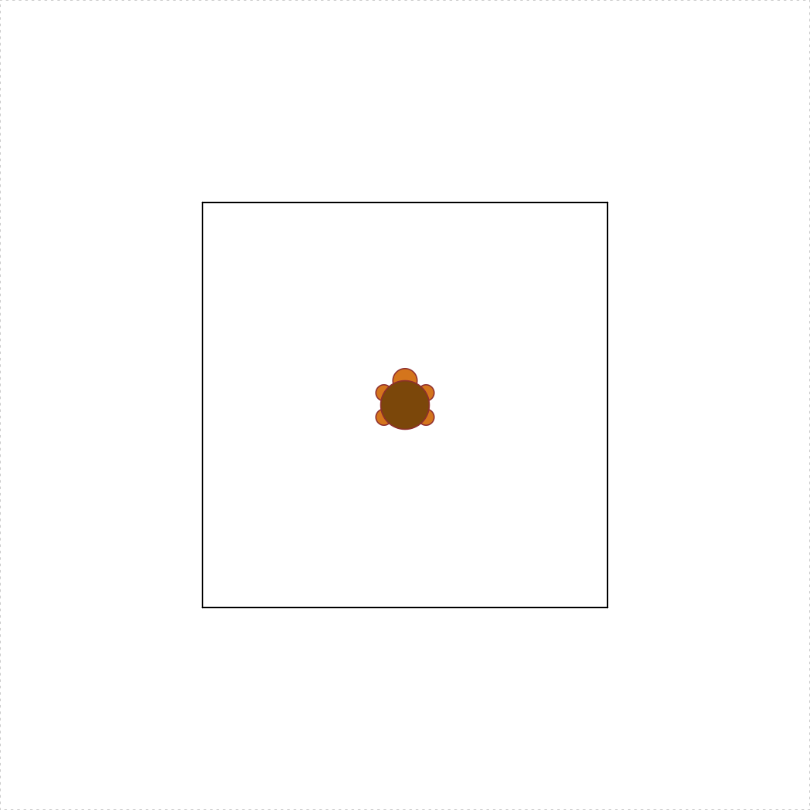
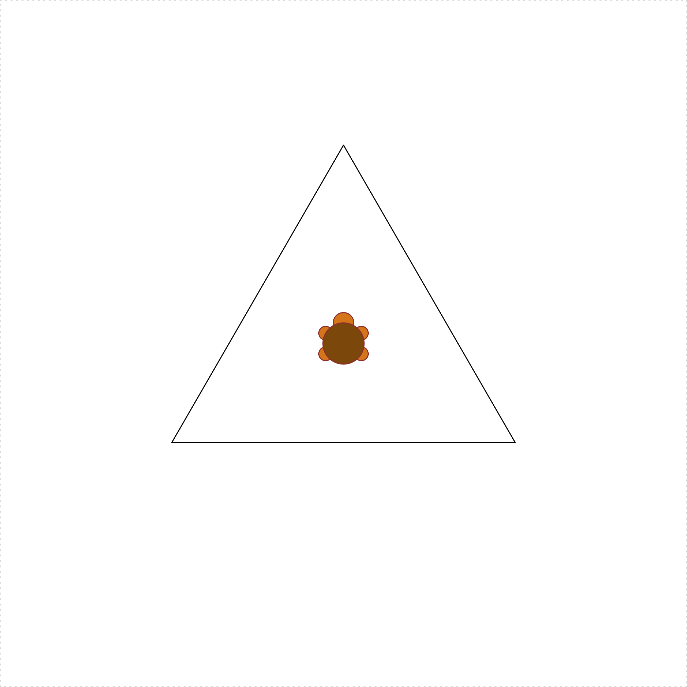

Homework 3 - Creating Functions
Due: Feb 08 by 11:59pm
Submission Instructions: Create a zip file of all the files in your R project folder for this assignment, then submit your zip file on the corresponding assignment submission on Blackboard.
Weight: This assignment is worth 4% of your final grade.
Purpose: The purposes of this assignment are:
- To practice creating your own functions in R from scratch.
- To practice writing code using good style.
- To practice problem solving (e.g. using Polya’s technique).
Assessment: Each question indicates the % of the assignment grade, summing to 100%. The credit for each question will be assigned as follows:
- 0% for not attempting a response.
- 50% for attempting the question but with major errors.
- 75% for attempting the question but with minor errors.
- 100% for correctly answering the question.
The reflection portion is always worth 10% and graded for completion.
Rules:
- Problems marked SOLO may not be worked on with other classmates, though you may consult instructors for help.
- For problems marked COLLABORATIVE, you may work in groups of up to 3 students who are in this course this semester. You may not split up the work – everyone must work on every problem. And you may not simply copy any code but rather truly work together and submit your own solutions.
Readings
The readings from the last week will serve as a helpful reference as you complete this assignment. You can review them here:
Using the autograder
- You can check your solutions to problems 2 - 7 by logging into the autograder and uploading your
hw3.Rfile.- The file must be named
hw3.Ror it won’t work.- Your user name is your netID, and your password is inside the
readme.txtfile in the Box folder I shared with you.
1) Staying organized [SOLO, 5%]
As always, we’re going to use an R project to keep everything in this assignment tidy. Download and use this template for your assignment. Inside the “hw3” folder, open and edit the R script called “hw3.R” and fill out your name, Net ID, and the names of anyone you worked with on this assignment.
2) integerSquareRoot(n) [SOLO, 10%]
Given a non-negative integer n, return the integer value that is closest to its square root. For example, integerSquareRoot(10) returns 3.
3) fabricYards(inches) [SOLO, 10%]
Fabric must be purchased in whole yards. Write a function that takes a non-negative number of inches of fabric desired, and returns the smallest number of whole yards of fabric that must be purchased. Thus, fabricYards(1) is 1 (you need a full yard if you buy one inch) and fabricYards(36) is also 1, but fabricYards(37) is 2. Hint: There are 36 inches in a yard!
4) fabricExcess(inches) [SOLO, 10%]
Write a function that takes a non-negative number of inches of fabric desired and returns the number of inches of excess fabric that must be purchased (as purchases must be in whole yards). Thus, since you need a whole yard when you buy 1 inch, fabricExcess(1) is 35. Similarly, fabricExcess(36) is 0, and fabricExcess(37) is 35.
Hint: there are (at least) two good ways to write this. One way involves a simple expression using one of the math operators we have learned. The other way uses fabricYards(inches) (which you just wrote!).
5) isPerfectCube(x) [SOLO, 15%]
Given an integer value x, returns TRUE if it is a perfect cube and FALSE otherwise. That is, return TRUE if there is another integer y such that x = y^3. Thus, isPerfectCube(27) returns TRUE, but isPerfectCube(16) returns FALSE.
6) kthDigit(x, k) [COLLABORATIVE, 15%]
Given two integers, x and k, return the kth digit of x, counting from the right. So:
kthDigit(789, 1)returns9kthDigit(789, 2)returns8kthDigit(789, 3)returns7kthDigit(789, 4)returns0
Negative numbers should work, too, so kthDigit(-789, 1) returns 9.
7) numberOfPoolBalls(rows) [COLLABORATIVE, 15%]

Pool balls are arranged in rows where the first row contains 1 pool ball and each row contains 1 more pool ball than the previous row. Thus, for example, 3 rows contain 6 total pool balls (1+2+3). With this in mind, write the function numberOfPoolBalls(rows) that takes a non-negative integer value (the number of rows) and returns another integer value (the number of pool balls in that number of full rows). For example, numberOfPoolBalls(3) returns 6. We will not limit our analysis to a “rack” of 15 balls; rather, our pool table can contain an unlimited number of rows. Hint: For this problem you should research Triangular Numbers.
8) turtleSquare(s) [COLLABORATIVE, 10%]
Note: Make sure your solutions for the remaining problem(s) are below the
ignore_restcomment in your .R file (otherwise the autograder will run this code and it will be slow.
Write the function turtleSquare(s) which uses the TurtleGraphics package to draw a square with side length s < 100 (because the turtle will “escape” the terrarium when s >= 100). The square should be centered in the turtle’s terrarium, and your turtle should be placed in the center when done. Important: Do not put the turtle_init() command inside your function - the turtle should already be “initialized” inside the terrarium before calling your turtleSquare(s) function. For example, the code below produces a square with side length of 50:
library(TurtleGraphics)
turtle_init()
turtleSquare(50)
9) Read and reflect [SOLO, 10%]
Read and reflect on the following readings to preview what we will be covering next:
Afterwards, in a comment (#) in your .R file, write a short reflection on what you’ve learned and any questions or points of confusion you have about what we’ve covered thus far. This can just few a few sentences related to this assignment, next week’s readings, things going on in the world that remind you something from class, etc. If there’s anything that jumped out at you, write it down.
Submit
Instructions for how to submit your assignment are at the top of this page.
Bonus: turtleTriangle(s) [SOLO, 3%]
Write the function turtleTriangle(s) which uses the TurtleGraphics package to draw an equilateral triangle with side length s < 100. The triangle should be centered in the turtle’s terrarium, and your turtle should be placed in the center when done. Just like with turtleSquare(s), do not put the turtle_init() command inside your function - the turtle should already be “initialized” inside the terrarium before calling turtleTriangle(s). Hint: Getting the triangle centered is the tricky part - you may want to read more about equilateral triangles and apothems. The code below produces a triangle with side length of 50:
library(TurtleGraphics)
turtle_init()
turtleTriangle(50)